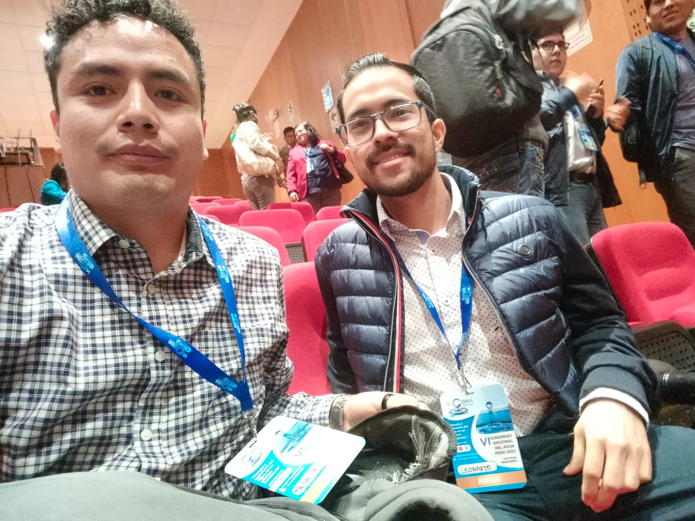
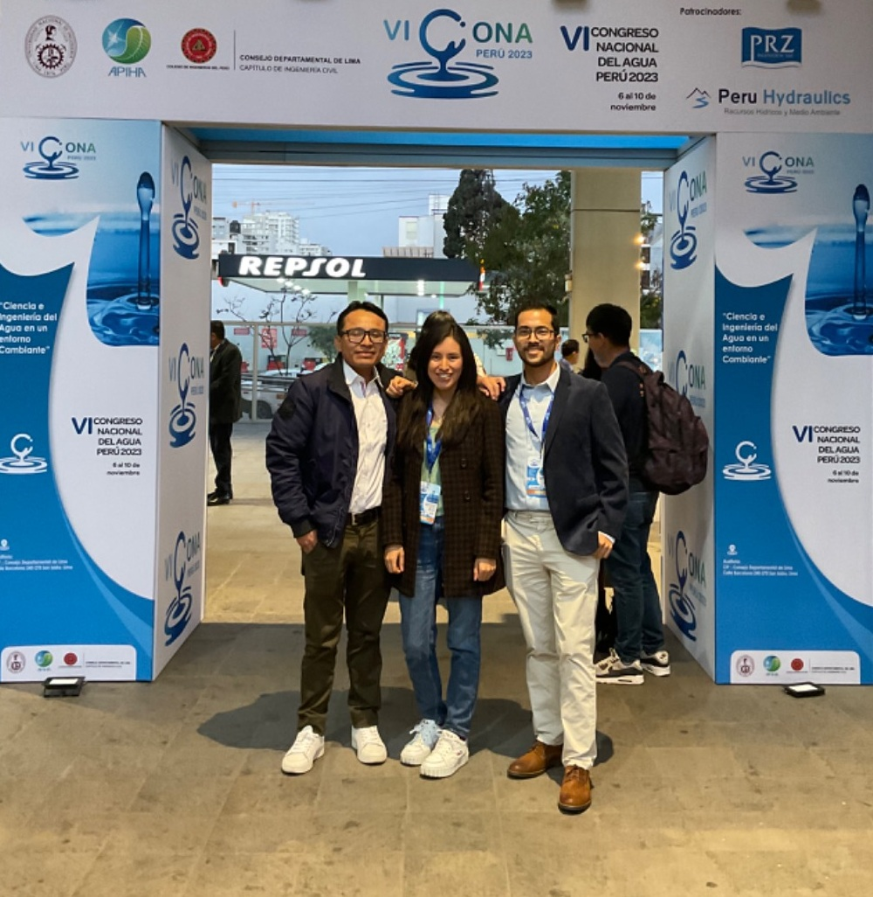
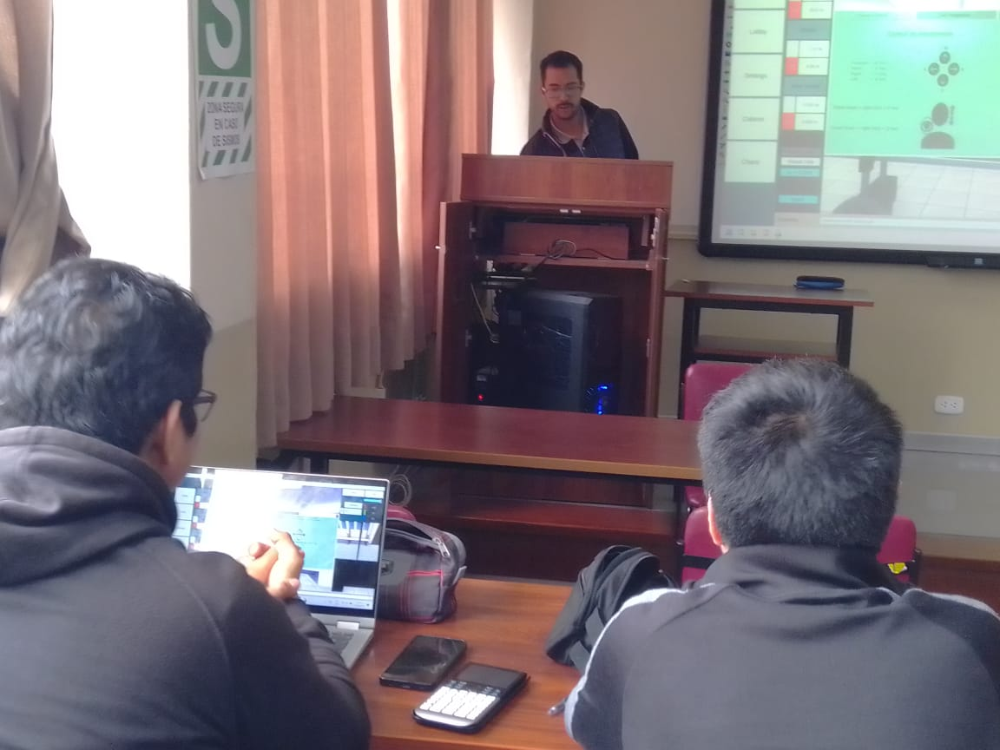
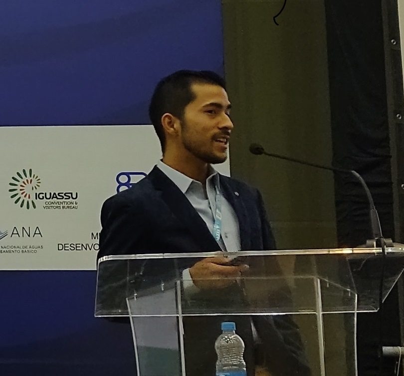
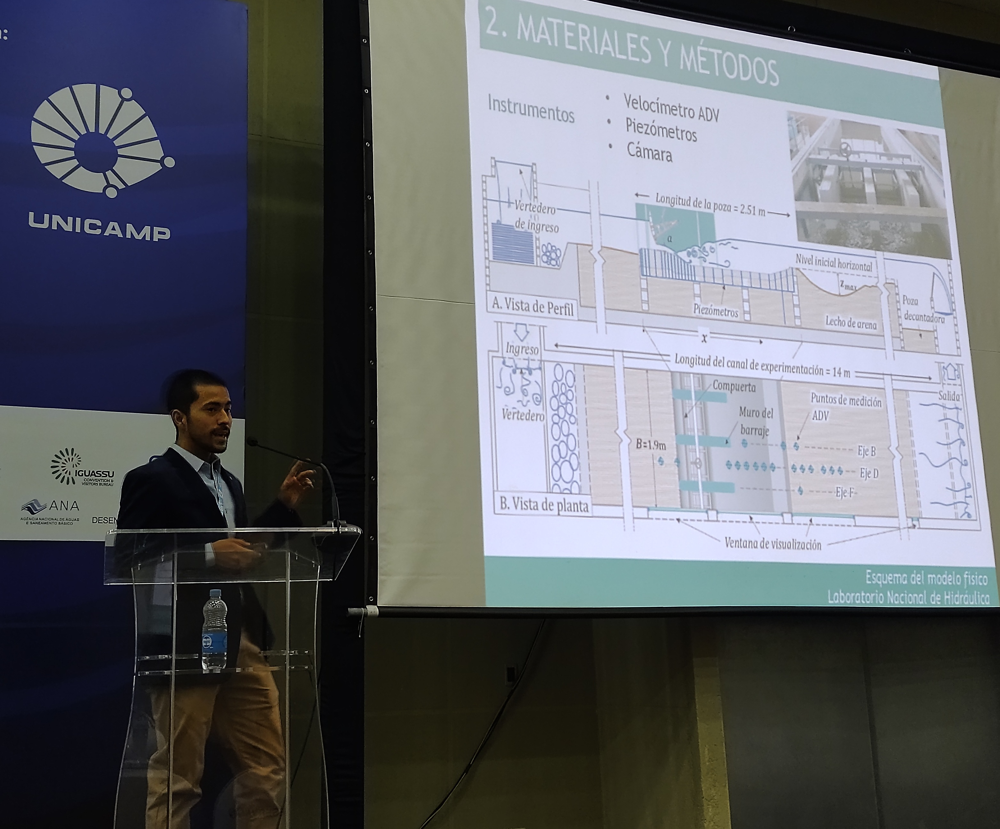
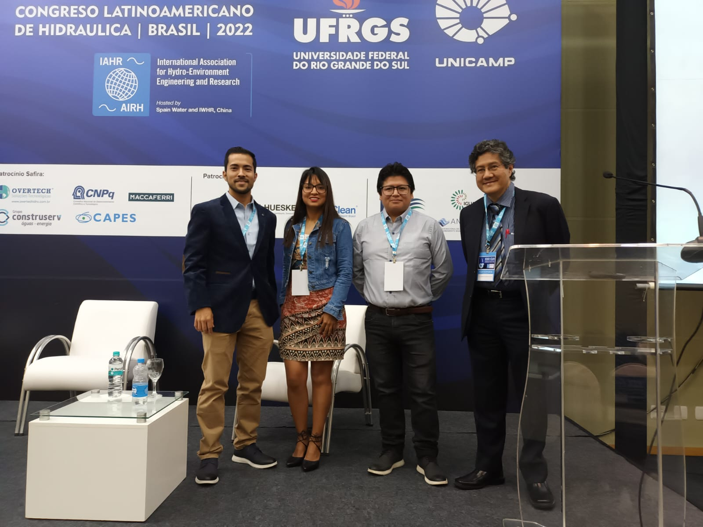
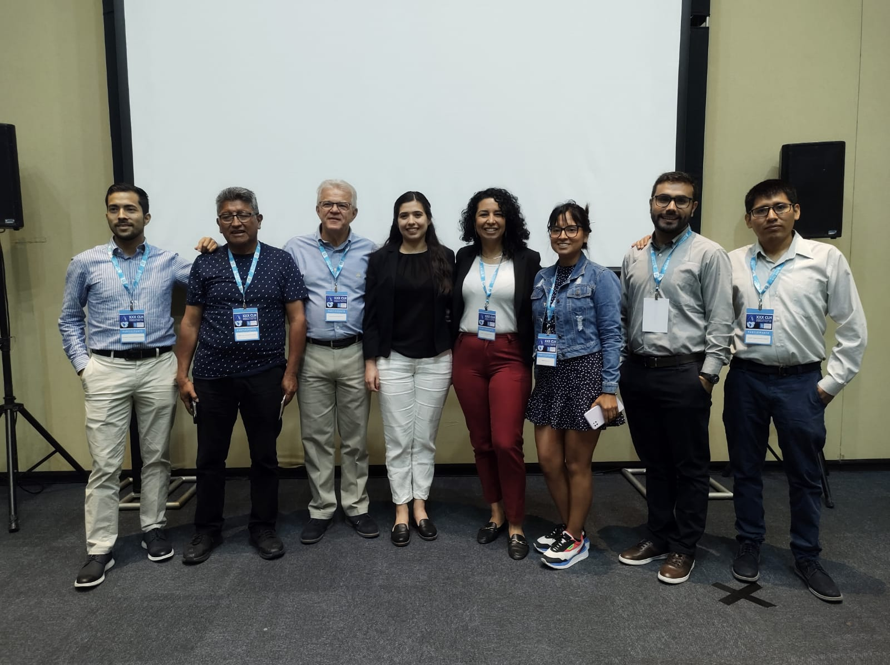
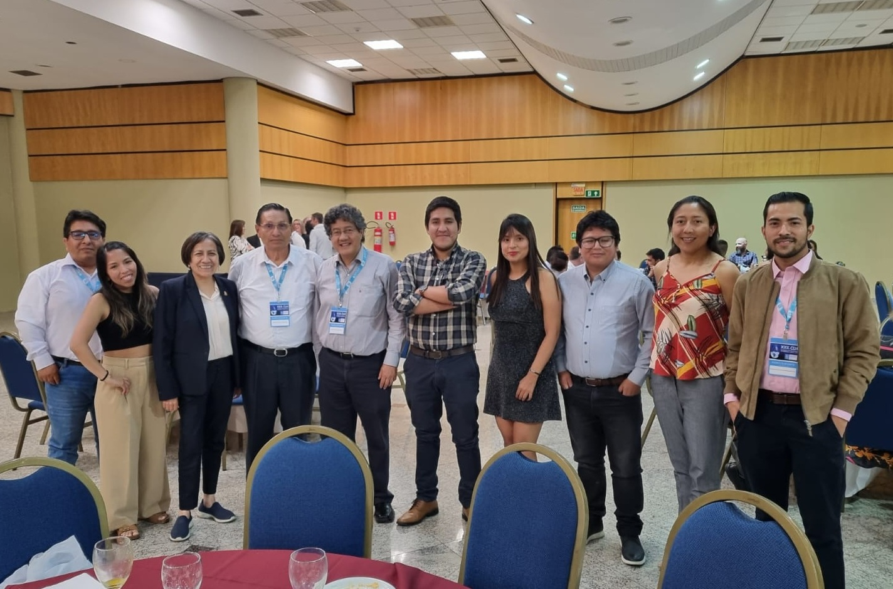
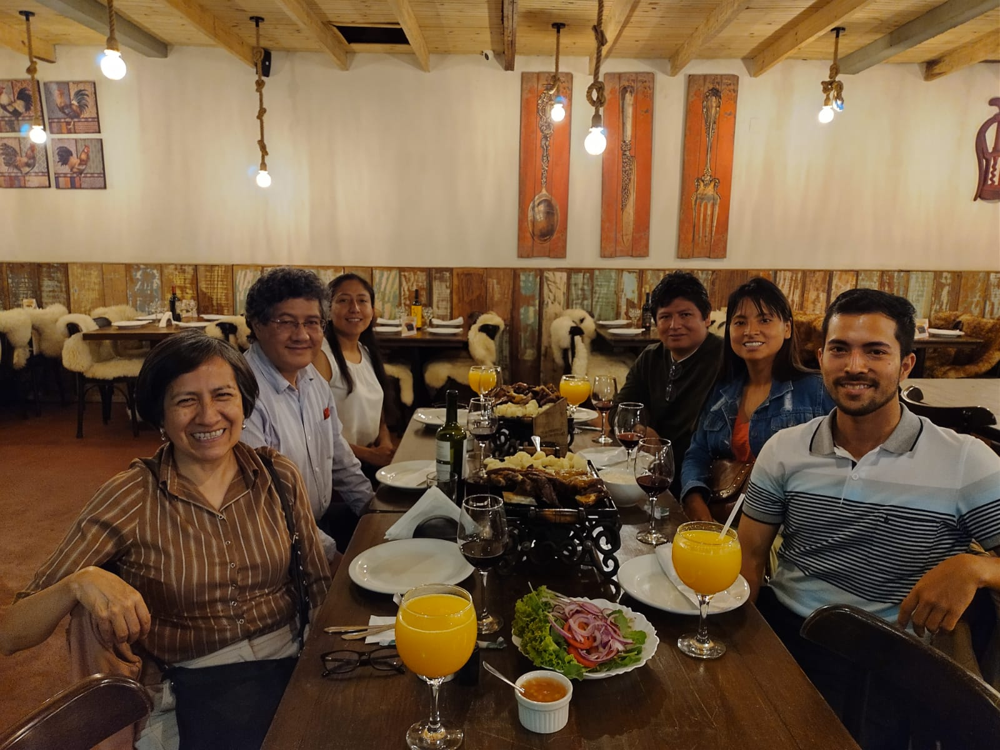

NATIONAL WATER CONGRESS CONA - LIMA, PERÚ
6-10 November 2023 - Lima, Perú
On November 10th - 2023 Eng. Luis Castro and I presented the results of a development of a Virtual Laboratory. The research was part of a Research Project Program of the Civil Engineering Faculty at the National University of Engineering (UNI-Perú). This project was a cooperative effort of Eng. Luis Castro, Eng. Redy Sanchez, Eng. Roger Hidalgo and myself.
More information about the presentation here

Attending
My dearest friend and colleague Eng. Martin Cieza.

UNI colleagues
Picture on the final day with the Eng. Luis Castro and Dr. Mishel Reyes.

Lab testing
Testing of the virtual laboratory at the National University of Engineering.
LATINAMERICAN CONGRESS OF HYDRAULICS - FOZ DO IGUAZÚ, BRAZIL
7-11 November 2022 - Foz do Iguazú, Brazil.
On November 7th - 2022 I presented a research on the numerical turbulence model to assess stilling basins. The research was carried out in the National Laboraory of Hydraulics (UNI-Perú), which supported the reseach with the laboratory facilities for the experiments, and also the computer resources in the cluster TIPON-UNI
The article presented for this congress was co-authored by Dr. Julio Kuroiwa Zevallos. More information about the article can be found in the Congress Proceedings of the first day

Presentation
Presenting at the inauguration of the 30th LAD Congress.

Presentation
Presenting at the inauguration of the 30th LAD Congress.

UNI group
UNI team attending the 30th LAD Congress. From left to right: myself, Eng. Rebeca Mallqui, Eng. Deivy Huaranca and Dr. Julio Kuroiwa.

Debris-flow structures
Final picture of the workshop on Debris-flow control structures ("Estructuras de corrección de torrentes") given by Dr. Gianfranco Morassutti F.

Networking friday
Networking night at the closure of the 30th LAD Congress with the peruvian team.

Dinner night
Dinner night with peruvian colleagues. From left to right: Dr. Ada Arancibia,
Dr. Julio Kuroiwa, Eng. Susana Salas, Eng. Deivy Huaranca, Eng. Rebeca Mallqui and myself.